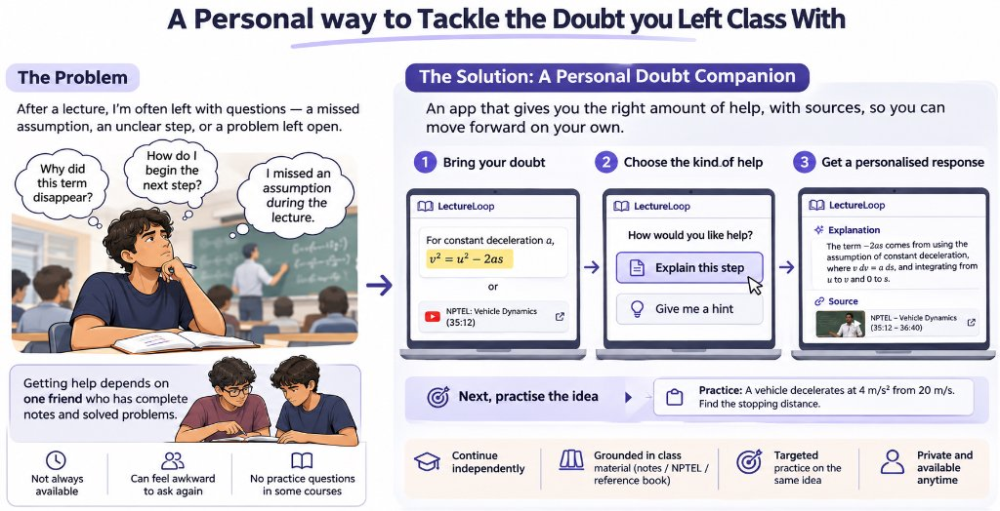

Stuck at a step?
Paste the lecture link at the moment you paused, ask why the professor did what they did, and get a short answer pinned to where it’s explained — then test yourself on that step.
Try a sample lecture
Real NPTEL lectures, opened in one click.
Loading samples…
Transcript ·12:40time and passage from a real caption cue
Video · around12:40approximate moment found by the model; answer is a paraphrase